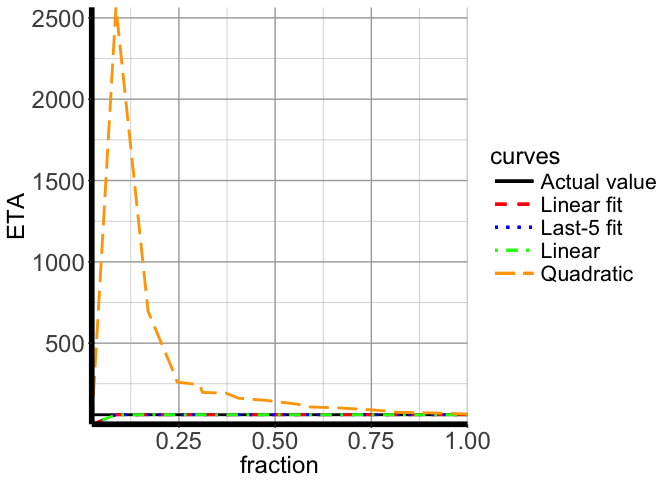
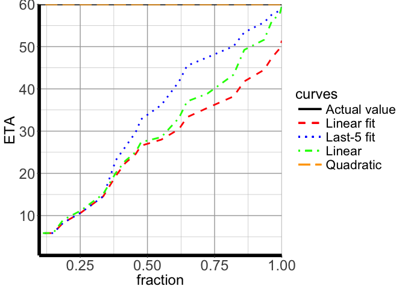
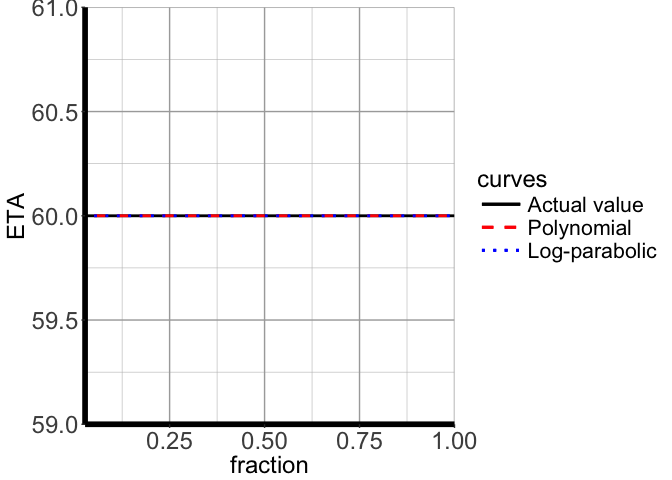
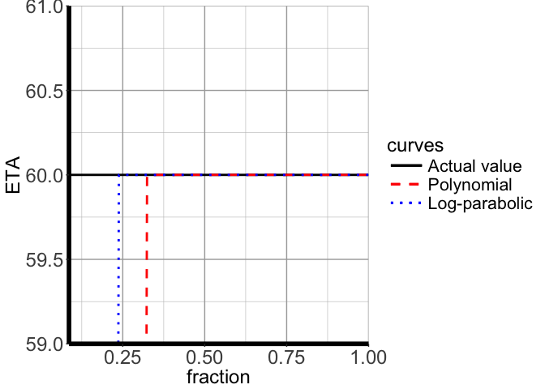
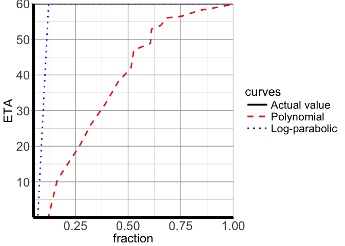
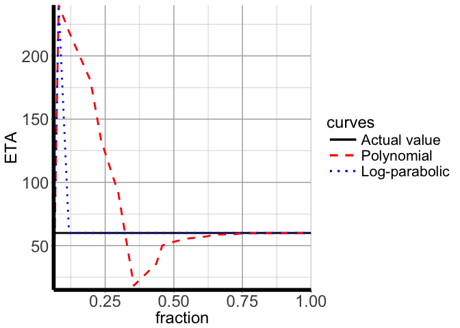

Recently I had to perform some heavy post-processing of the results of a
simulation I am performing. One of the things I had to do was create
complex plots of different variables. Since I needed to have some idea
about when the job would finish, I decided to port a Fortran module I
have been using for several years to do just that. The result is an
animated (in console/terminal, at least) status bar in R which looks
something like this:
======> | Processing snapshot: 00081 (12%) ETA: 2017-10-25 16:07:00
History
A few years ago I was leading a complex
project trying to explain the
astrophysical source Swift J1644 and
also participated heavily in a project attempting to understand the the
broader consequences of our
conclusions about Swift J1644.
One of the technical challenges is that I had to perform a large number
of simulations on a machine shared with other users. The simulations
were performed in parallel and their performance depended heavily on
what the other users were and were not doing. Still, I wanted to have
some inkling about when each simulation was supposed to finish.
Since the code was written in Fortran, I started writing a module to
take care of that task. First, I had to write a module that properly
dealt with system time. You can download that module from
https://github.com/petarmimica/timers_f. Fortunately, all this is
nicely dealt with in R with built-in routines and lubridate package.
Next, I wrote a module that has to offer the following functionality:
- allow the user to log the progress of some task
- estimate the time of completion
- return the predictions in a nice format
Clearly, the last item is easily dealt with using the timers_f, but
the first two had to be implemented. In my implementation a data type is
defined that contains several vectors. One of the vectors are all logged
times, and another vector contains the corresponding fraction of work
done. This data is then fed to a few estimator routines that construct a
model to try to predict at what time the job would reach some level of
completion. Whenever a new entry was added by the user, the estimators
would predict the time at which that particular value of job completion
should have been reached using the previous data. Then each algorithm
could be graded by some method (I chose a sum of squares of deviations
for all data points, but one can use many other metrics). Then each
estimator would make the prediction for when the job completion would
reach 100%, and then the final prediction would be computed by using a
weighted average of all estimators.
I experimented with several estimators, but in the end I settled on four
(in reality two, but with varying parameters): * a linear fit of all
measurements * a linear fit of (at most) the last five measurements *
a linear prediction using only the last measurement * a quadratic
prediction using only the last measurement
Although I am using two different codes (a CFD simulation and a
relativistic raytracing code), and although I am using them on different
machines, performing both parallel and sequential calculations and using
both shared and distribured memories, the combination of these four
estimators always gave satisfactory results. That is why I decided to
implement this in R.
Introducing estatusbar
The package that implements the abovementioned functionality can be
found here: https://github.com/petarmimica/estatusbar. We can easily
test it. Assume that we are going to log the time after each 10% of the
task has been completed, but the time between each entry is a random
number between 0 and 5 seconds (uniform distribution).
est <- estatusbar$new()
for (i in 1:10) {
Sys.sleep(5 * runif(1))
est$add(i / 10)
est$display()
}
##
|===> | (10%) ETA: 2017-10-26 12:42:17
|=======> | (20%) ETA: 2017-10-26 12:42:44
|===========> | (30%) ETA: 2017-10-26 12:42:59
|===============> | (40%) ETA: 2017-10-26 12:42:32
|===================> | (50%) ETA: 2017-10-26 12:42:50
|=======================> | (60%) ETA: 2017-10-26 12:43:17
|===========================> | (70%) ETA: 2017-10-26 12:42:44
|===============================> | (80%) ETA: 2017-10-26 12:42:47
|===================================> | (90%) ETA: 2017-10-26 12:42:54
|=======================================>| (100%) ETA: 2017-10-26 12:42:51
Sys.time()
## [1] "2017-10-26 12:42:51 CEST"
I printed the system time after the task has been completed. This is a
pretty adverse test, but it seems that the routine was able to handle it
and the estimated final time of completion was close to the final one
after 50% of the task has been completed.
Testing the estimators
Let’s test the estimators for different kinds of tasks. We will generate
the test data so that there are 20 entries, but the fractions are spaced
randomly. Then we will use different models for the execution time.
The intervals are generated:
intervals <- runif(20)
intervals <- intervals / sum(intervals) # normalize
cintervals <- cumsum(intervals)
Constant time
In this test we assume that the time increases linearly with the
fraction of work done. Let’s assume that the total time it takes for the
task to finish is 60 seconds.
times.lin <- intervals
times.lin <- 60 * times.lin / sum(times.lin)
We can now test the estimators:
Sys.time() # start
## [1] "2017-10-26 12:42:51 CEST"
est.lin <- estatusbar$new()
for (i in 1:length(intervals)) {
Sys.sleep(times.lin[i])
est.lin$add(cintervals[i])
est.lin$display()
}
##
|> | (02%) ETA: 2017-10-26 12:42:51
|==> | (08%) ETA: 2017-10-26 12:43:51
|=====> | (16%) ETA: 2017-10-26 12:43:51
|========> | (23%) ETA: 2017-10-26 12:43:51
|========> | (24%) ETA: 2017-10-26 12:43:51
|===========> | (30%) ETA: 2017-10-26 12:43:51
|===========> | (31%) ETA: 2017-10-26 12:43:51
|=============> | (37%) ETA: 2017-10-26 12:43:51
|===============> | (40%) ETA: 2017-10-26 12:43:51
|==================> | (47%) ETA: 2017-10-26 12:43:51
|=====================> | (55%) ETA: 2017-10-26 12:43:52
|======================> | (58%) ETA: 2017-10-26 12:43:51
|=========================> | (66%) ETA: 2017-10-26 12:43:50
|============================> | (74%) ETA: 2017-10-26 12:43:51
|===============================> | (80%) ETA: 2017-10-26 12:43:51
|===============================> | (81%) ETA: 2017-10-26 12:43:51
|=================================> | (86%) ETA: 2017-10-26 12:43:51
|====================================> | (93%) ETA: 2017-10-26 12:43:51
|======================================> | (99%) ETA: 2017-10-26 12:43:51
|=======================================>| (100%) ETA: 2017-10-26 12:43:51
Sys.time()
## [1] "2017-10-26 12:43:51 CEST"
It seems that after the first two entries the linear estimators dominate
and predict correctly the completion time despite the irregular nature
of the subsequent data. Let’s look into this in a bit more detail, by
plotting the estmates for the final time as entries are addped.
 As can be
seen, all linear models perform perfectly, while the quadratic one does
not (as expected). Let’s look at the linear models only:
##
Quadratic time
In this test we assume that the time increases quadratically with the
fraction of work done.
intervals <- runif(20)
intervals <- intervals / sum(intervals) # normalize
cintervals <- cumsum(intervals)
ctimes.sq <- cintervals^2
times.sq <- ctimes.sq
times.sq[2:length(times.sq)] <- times.sq[2:length(times.sq)] - times.sq[1:(length(times.sq)-1)]
times.sq <- 60 * times.sq / sum(times.sq)
Sys.time() # start
## [1] "2017-10-26 12:43:53 CEST"
est.sq <- estatusbar$new()
for (i in 1:length(intervals)) {
Sys.sleep(times.sq[i])
est.sq$add(cintervals[i])
est.sq$display()
}
##
|==> | (09%) ETA: 2017-10-26 12:43:53
|==> | (09%) ETA: 2017-10-26 12:43:59
|====> | (14%) ETA: 2017-10-26 12:46:03
|======> | (18%) ETA: 2017-10-26 12:44:54
|=========> | (25%) ETA: 2017-10-26 12:44:55
|============> | (33%) ETA: 2017-10-26 12:44:53
|==============> | (38%) ETA: 2017-10-26 12:44:53
|===============> | (41%) ETA: 2017-10-26 12:44:54
|=================> | (45%) ETA: 2017-10-26 12:44:54
|==================> | (47%) ETA: 2017-10-26 12:44:54
|=====================> | (55%) ETA: 2017-10-26 12:44:54
|=======================> | (61%) ETA: 2017-10-26 12:44:53
|========================> | (64%) ETA: 2017-10-26 12:44:53
|===========================> | (72%) ETA: 2017-10-26 12:44:54
|===============================> | (82%) ETA: 2017-10-26 12:44:54
|=================================> | (86%) ETA: 2017-10-26 12:44:54
|====================================> | (93%) ETA: 2017-10-26 12:44:54
|=====================================> | (96%) ETA: 2017-10-26 12:44:54
|======================================> | (99%) ETA: 2017-10-26 12:44:54
|=======================================>| (100%) ETA: 2017-10-26 12:44:54
Sys.time()
## [1] "2017-10-26 12:44:54 CEST"
Again, the method performs very well after the first couple of entries.
Let’s look at the errors:
 No
surprises here. The quadratic estimator outperforms the rest.
Simplification and generalization
Of course, given that the Fortran module was developed on the fly, with
estimators added as need arose, it is no surprise that it seems messy
and confused. Also, since R is much better suited for things such as
fitting, I can replace the whole suite of estimators with a routine that
uses polynomial estimator in R. Furthermore, it is possible that we
encounter a task that is slow initially, but speeds up subsequently.
Therefore, I implemented the following estimators:
- polynomial
- log-parabolic (fallback to polynomial if not enough points)
All this will be used on a window (i.e., a small number of recent
entries). The window size can be controlled by the user, and can even
encompass all data.
Here is an implementation of the polynomial fitting routine:
estatusbar.polynomial <- function(private, frac, win) {
num.entries <- length(private$fracs)
realwin <- min(c(win, num.entries)) # the real window may be smaller than win
# check if we can use the parabola or have to fallback to linear fit
if (realwin < 4) {
par <- FALSE
} else {
par <- TRUE
}
# create a data frame to perform regression
df <- data.frame(fracs = private$fracs[(num.entries - realwin + 1):(num.entries)], times = private$measured[(num.entries - realwin + 1):(num.entries)])
# regression
if (par) {
fit <- lm(times ~ fracs + I(fracs^2), data = df)
} else {
fit <- lm(times ~ fracs, data = df)
}
# create a data frame for predicting
pdf <- data.frame(fracs = c(frac))
# predict the time at frac
pdf$times <- predict(fit, pdf)
# if the prediction is negative, fallback to linear
if (pdf$times[1] < 0) {
fit <- lm(times ~ fracs, data = df)
pdf$times <- predict(fit, pdf)
# if the prediction is still negative, set to 0
if (pdf$times[1] < 0) {
pdf$times <- 0
}
}
return(pdf$times[1])
}
And here is the log-parabolic fitting routine with a fallback to the
previous one if the first point cannot be avoided (because both values
are zero):
estatusbar.log <- function(private, frac, win) {
num.entries <- length(private$fracs)
realwin <- min(c(win, num.entries)) # the real window may be smaller than win
# fallback to estatusbar.polynomial if there are not enough points
if (realwin < 3) {
return(estatusbar.polynomial(private, frac, win))
}
realwin <- realwin - 1
# check if we can use the parabola or have to fallback to linear fit
if (realwin < 4) {
par <- FALSE
} else {
par <- TRUE
}
# ln(y) = A + B * ln(x) + C * ln(x)^2
# create a data frame to perform regression
df <- data.frame(fracs = log(private$fracs[(num.entries - realwin + 1):(num.entries)]), times = log(private$measured[(num.entries - realwin + 1):(num.entries)]))
# regression
if (par) {
fit <- lm(times ~ fracs + I(fracs^2), data = df)
} else {
fit <- lm(times ~ fracs, data = df)
}
# create a data frame for predicting
pdf <- data.frame(fracs = log(c(frac)))
# predict the time at frac
pdf$times <- predict(fit, pdf)
return(exp(pdf$times[1]))
}
Testing the new scheme
Let’s repeat the tests and perform some new ones.
Linear time

As expected, both methods perform very well.
Quadratic time

Again, and as expected, both methods perform very well.
Cubic time
Let’s try a test with 20 time intervals where the time grows as the
third power.

Looks good for the parabolic estimator. Let’s see it live in action:
## [1] "2017-10-26 12:44:56 CEST"
##
|=> | (05%) ETA: 2017-10-26 12:44:56
|=> | (07%) ETA: 2017-10-26 12:44:56
|===> | (12%) ETA: 2017-10-26 12:45:04
|=====> | (16%) ETA: 2017-10-26 12:45:24
|======> | (19%) ETA: 2017-10-26 12:47:06
|=========> | (26%) ETA: 2017-10-26 12:46:05
|===========> | (32%) ETA: 2017-10-26 12:45:51
|==============> | (39%) ETA: 2017-10-26 12:45:58
|=================> | (45%) ETA: 2017-10-26 12:46:02
|===================> | (51%) ETA: 2017-10-26 12:45:57
|====================> | (52%) ETA: 2017-10-26 12:45:56
|=======================> | (60%) ETA: 2017-10-26 12:45:58
|=======================> | (61%) ETA: 2017-10-26 12:45:56
|=========================> | (65%) ETA: 2017-10-26 12:45:52
|==========================> | (68%) ETA: 2017-10-26 12:45:56
|=============================> | (75%) ETA: 2017-10-26 12:45:56
|================================> | (83%) ETA: 2017-10-26 12:45:56
|===================================> | (91%) ETA: 2017-10-26 12:45:56
|======================================> | (97%) ETA: 2017-10-26 12:45:56
|=======================================>| (100%) ETA: 2017-10-26 12:45:56
## [1] "2017-10-26 12:45:56 CEST"
Square-root time
Let’s try a test with 20 time intervals where the time grows as the
square root.

Looks good for the parabolic estimator and the polynomial estimator
after some time. Let’s see it live in action:
## [1] "2017-10-26 12:45:56 CEST"
##
|=> | (06%) ETA: 2017-10-26 12:45:56
|==> | (08%) ETA: 2017-10-26 12:49:57
|===> | (11%) ETA: 2017-10-26 12:48:16
|======> | (19%) ETA: 2017-10-26 12:47:12
|========> | (23%) ETA: 2017-10-26 12:47:00
|==========> | (29%) ETA: 2017-10-26 12:46:58
|=============> | (35%) ETA: 2017-10-26 12:46:55
|================> | (43%) ETA: 2017-10-26 12:46:56
|=================> | (45%) ETA: 2017-10-26 12:46:57
|==================> | (48%) ETA: 2017-10-26 12:46:57
|====================> | (54%) ETA: 2017-10-26 12:46:57
|=======================> | (62%) ETA: 2017-10-26 12:46:57
|=========================> | (65%) ETA: 2017-10-26 12:46:57
|===========================> | (72%) ETA: 2017-10-26 12:46:57
|============================> | (73%) ETA: 2017-10-26 12:46:57
|=============================> | (77%) ETA: 2017-10-26 12:46:57
|===============================> | (80%) ETA: 2017-10-26 12:46:57
|================================> | (82%) ETA: 2017-10-26 12:46:57
|===================================> | (90%) ETA: 2017-10-26 12:46:57
|=======================================>| (100%) ETA: 2017-10-26 12:46:57
## [1] "2017-10-26 12:46:57 CEST"
1-exp time
Let’s try a test with 20 time intervals where the time grows as the 1 -
exp(-5*frac). This is a case where most of the work is done initially.

Both estimators do a good job after some time, but that may not be very
useful, since most of the calculation is spent in the early part, where
the estimators overestimate the time of completion.
## [1] "2017-10-26 12:46:57 CEST"
##
|> | (01%) ETA: 2017-10-26 12:46:57
|====> | (12%) ETA: 2017-10-26 12:51:46
|====> | (13%) ETA: 2017-10-26 12:50:13
|====> | (14%) ETA: 2017-10-26 12:50:11
|======> | (18%) ETA: 2017-10-26 12:49:28
|=========> | (26%) ETA: 2017-10-26 12:49:10
|===========> | (31%) ETA: 2017-10-26 12:48:33
|============> | (32%) ETA: 2017-10-26 12:48:27
|================> | (43%) ETA: 2017-10-26 12:48:05
|================> | (43%) ETA: 2017-10-26 12:47:52
|==================> | (48%) ETA: 2017-10-26 12:47:55
|===================> | (50%) ETA: 2017-10-26 12:47:56
|====================> | (52%) ETA: 2017-10-26 12:47:56
|========================> | (64%) ETA: 2017-10-26 12:47:57
|===========================> | (70%) ETA: 2017-10-26 12:47:56
|==============================> | (77%) ETA: 2017-10-26 12:47:57
|================================> | (83%) ETA: 2017-10-26 12:47:57
|=================================> | (85%) ETA: 2017-10-26 12:47:57
|===================================> | (91%) ETA: 2017-10-26 12:47:57
|=======================================>| (100%) ETA: 2017-10-26 12:47:57
## [1] "2017-10-26 12:47:57 CEST"


 Or we can also plot everything but that small wedge:
Or we can also plot everything but that small wedge: